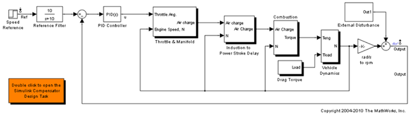
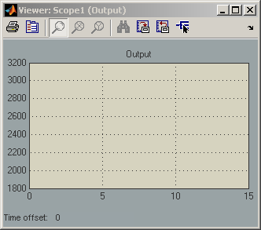
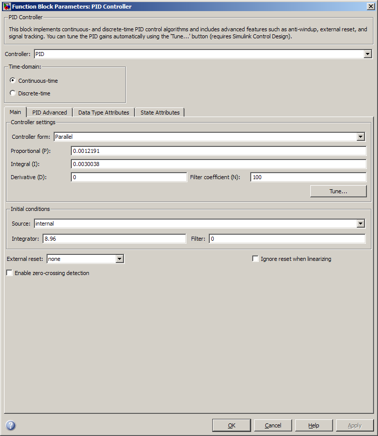
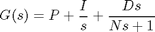
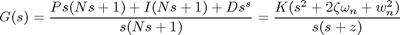
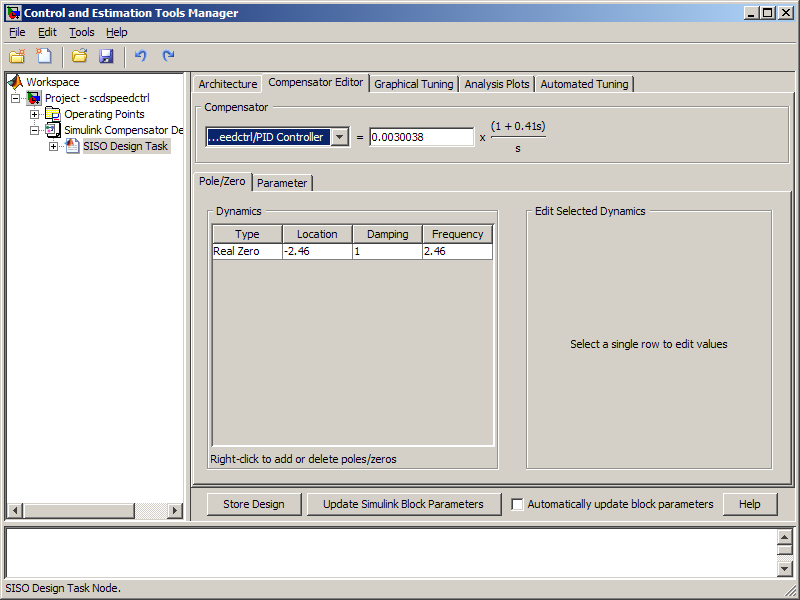
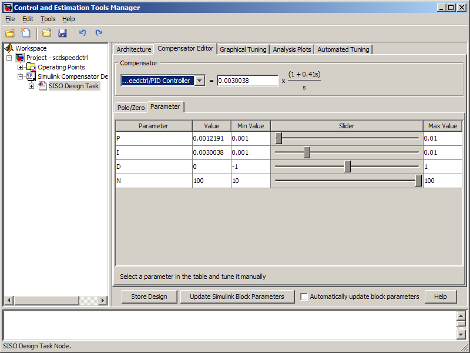
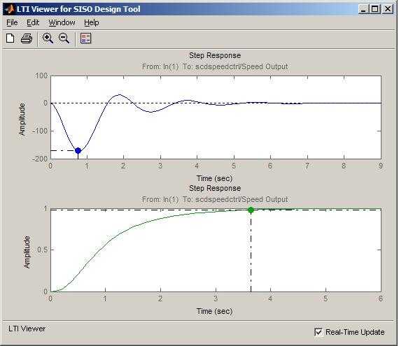

Tuning Simulink® Blocks in the Compensator Editor
Contents
Opening the Model
The following example is the speed control of a spark ignition engine. The initial compensator has been designed in a fashion similar to the demo entitled "Single Loop Feedback/Prefilter Design". Take a few moments to explore the model.
Open the engine speed control model
open_system('scdspeedctrl');
  Introduction
This demonstration introduces the use of the Compensator Editor when tuning Simulink® blocks. When tuning a block in Simulink there are two representations available in a SISO Design Task. These representations are the block parameters and the pole/zero/gain representations. For example in the speed control demonstration there is a PID controller with filtered derivative scdspeedctrl/PID Controller:

This block implements the traditional PID with filtered derivative as:

In this block P, I, D, and N are the parameters that are available for tuning. Another approach is to reformulate the block transfer function to be in the form of poles and zeros:

This formulation of poles, zeros, and gains allows for direct graphical tuning on design plots such as Bode, root locus, and Nichols plots. Additionally the SISO Design Task allows for both representations to be tuned using the Compensator Editor. The tuning of both representations is available for all supported blocks in Simulink® Control Design™.
Creating a SISO Design Task
In this example a Simulink Compensator Design Task will be used to create a SISOTOOL Design Task to tune the compensators in this feedback system. Launch a preconfigured task by double clicking on the subsystem in the lower left hand corner of the model to load a preconfigured Simulink Compensator Design Task.
Exploring the Compensator Editor Tab
The representations of PID compensator can be viewed and edited using the Compensator Editor tab. The upper portion of this panel allows for all compensators to be viewed and edited. When selecting this tab for the first time the pole and zero representation is first shown in the lower tabbed panel as shown below:

Use this panel to add and remove poles and zeros from the compensator. Since the PID with filtered derivative is fixed in structure number of poles and zeros will be limited to having up 2 zeros, 1 pole, and an integrator at s = 0.
The second panel labeled Parameter allows the P, I, D, and N parameters to be independently tuned. This panel is shown below:

Use the Value column to specify new values and use the Slider column to interactively tune the gains. By changing these gains the following will be updated:
- The open and closed-loop responses configured in the Graphical Tuning tab
- The responses such as closed loop step responses specified in the Analysis Plots tab
- The poles, zeros, and gains seen in the Pole/Zero tab
Use the Compensator Editor tab to tune the response of the control system.
Completed Design
The design requirements in the demo "Single Loop Feedback/Prefilter Design" can be met with the following controller parameters
- scdspeedctrl/PID Controller has parameters:
P = 0.0012191
I = 0.0030038
- scdspeedctrl/Reference Filter:
Numerator = 10;
Denominator = [1 10];
The responses of the closed loop system are shown below:

Writing the Design to Simulink
You can then test the design on the nonlinear model by clicking the Update Simulink Block Parameters button. This writes the parameters back to the Simulink model.
bdclose('scdspeedctrl')